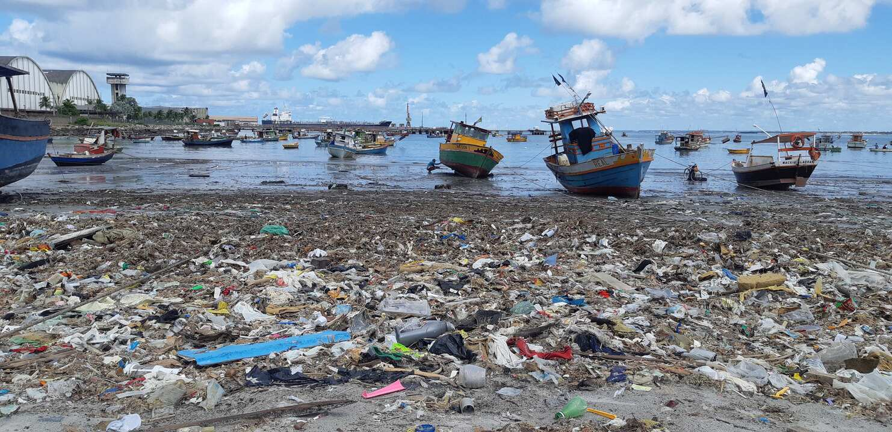

Olá! Somos a BlueWave, uma equipe totalmente focada em melhorar os ecossistemas marítimos! Como todos sabemos, nos últimos anos os oceanos têm passado por grandes problemas devido à poluição, pesca predatória, etc. Nós, da BlueWave, buscamos combater isso com nossos pensamentos e ideias.
